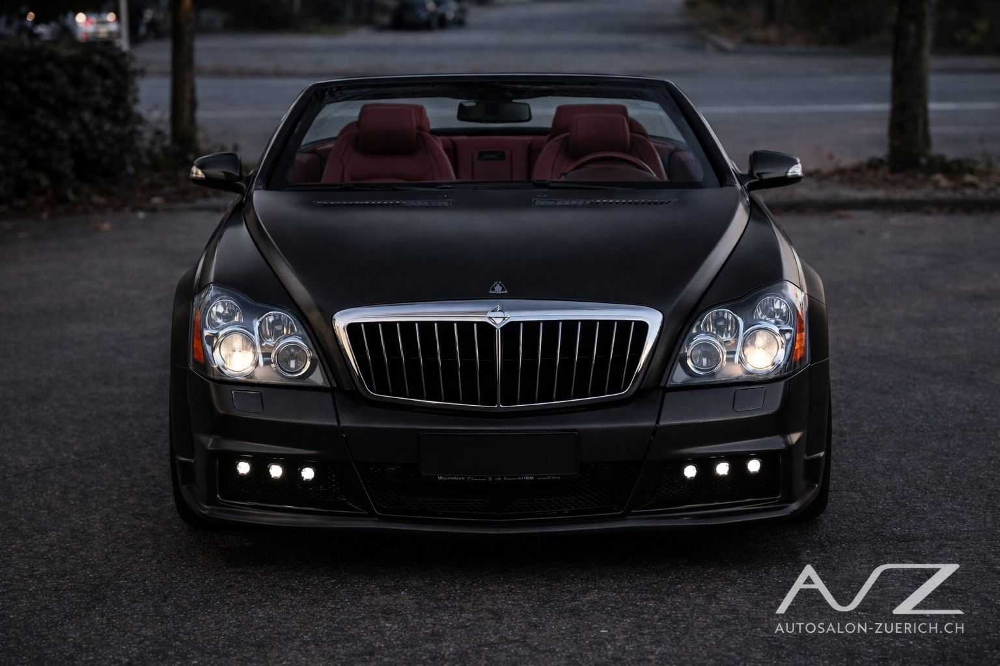
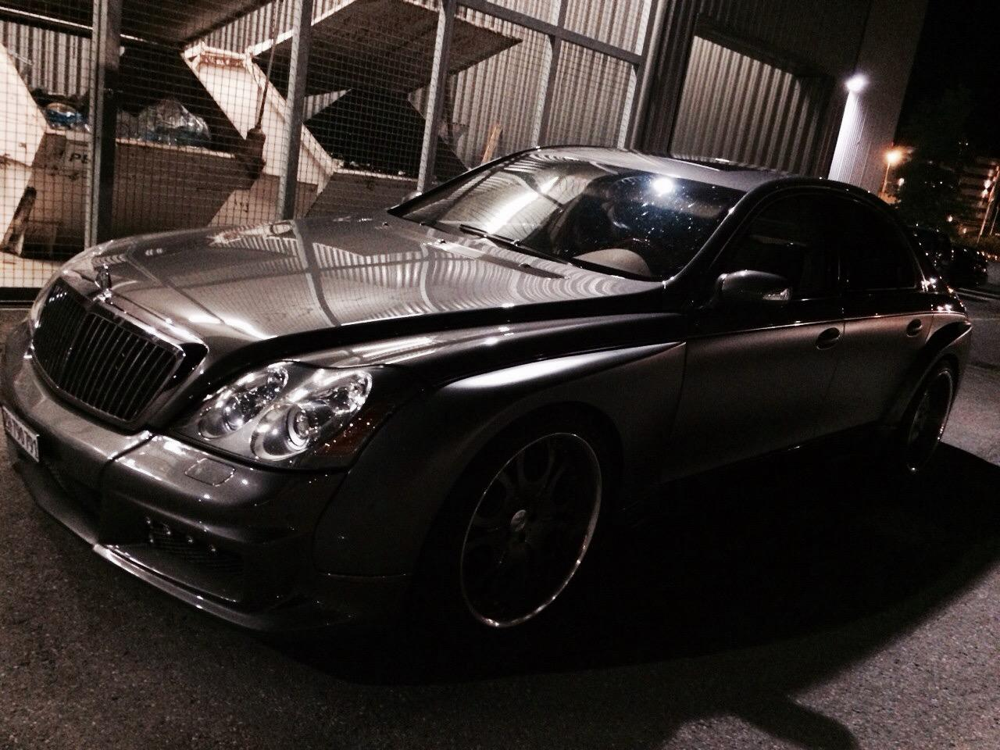

Maybach × FAB Design
57 S FAB Design
1 von nur 2 weltweit — ultimativer Luxus trifft radikales Design.
1 von nur 2 weltweit — ultimativer Luxus trifft radikales Design.
Der Maybach 57 S FAB Design ist eines von nur zwei jemals gebauten Exemplaren — ein absolutes Unikat in der Welt der Ultra-Luxusfahrzeuge. FAB Design aus der Schweiz hat den ohnehin exklusiven Maybach 57 S mit einem komplett überarbeiteten Karosserie-Kit in eine andere Dimension gehoben.
Unter der Haube arbeitet der bewährte 6.0-Liter V12-Biturbomotor mit 612 PS und einem gewaltigen Drehmoment von 1.000 Nm. Die FAB Design Modifikationen umfassen eine aggressive Frontschürze, verbreiterte Kotflügel, massgeschneiderte Seitenschweller und einen imposanten Heckdiffusor — alles in perfekter Harmonie mit der imposanten Maybach-Silhouette.
Tiefergelegt auf exklusiven mehrteiligen Schmiedefelgen und in einem zweifarbigen Dunkelgrau/Schwarz-Farbschema lackiert, vereint dieses Fahrzeug die unerreichte Fahrkultur des Maybach mit der visuellen Dramatik eines FAB Design Projekts. Ein Sammlerstück der höchsten Kategorie.

